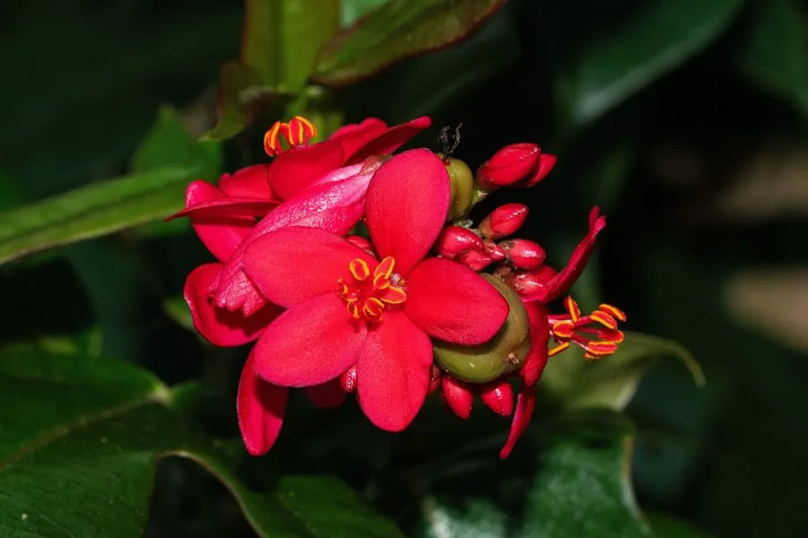

灌木与花木 · 植物界
琴叶珊瑚 Jatropha integerrima

大戟科麻疯树属常绿灌木，叶片形似提琴，花鲜红如珊瑚，几乎全年开花，是南方庭园常见的观赏灌木。
- 分类
- 门被子植物门纲木兰纲目金虎尾目科大戟科属麻疯树属
- 栖息环境
- 热带亚热带庭园与绿地，喜高温、充足阳光，不耐寒
- 地理分布
- 原产古巴等加勒比海地区；中国广东、广西、福建、海南、云南、台湾栽培
- 保护级别
- 暂无评估；中国未列入国家重点保护野生植物名录
物种志
琴叶珊瑚为大戟科麻疯树属常绿灌木，高一至三米，树皮灰褐色，嫩枝绿色。叶片互生，倒卵形，基部收缩呈提琴状，边缘全缘或具疏齿，表面深绿有光泽。花单性，雌雄同株，组成顶生的聚伞花序，花冠鲜红色，花瓣五枚，花心黄色，花期几乎全年，以春至秋季最盛；蒴果球形，成熟时褐色开裂，果期秋冬季。
琴叶珊瑚原产古巴、伊斯帕尼奥拉岛等加勒比海地区，中国广东、广西、福建、海南、云南、台湾等地有栽培。它喜高温、充足阳光和排水良好的土壤，不耐寒，冬季低温时叶片发红脱落。花鲜红、花期极长，是南方庭园和道路绿化的优良观花灌木；乳汁有毒，修剪时需避免接触皮肤和眼睛。因叶片形似提琴、花色如珊瑚，故得名琴叶珊瑚。
形态与习性
- 株高1–3 m，嫩枝绿色
- 花期几乎全年，春至秋最盛
- 果期秋冬季，蒴果球形
- 光照极喜光，光照足花更繁
- 水分喜湿润，忌积水
- 土壤疏松肥沃、排水良好
- 主要用途庭园观花灌木、道路绿化
趣味知识
- 琴叶珊瑚的叶片基部收窄，轮廓像一把小提琴，因此得名琴叶。
- 它的花鲜红、花心黄色，成串开放时像一簇簇珊瑚。
- 琴叶珊瑚的乳汁有毒，园林修剪时应戴手套并避免汁液入眼。